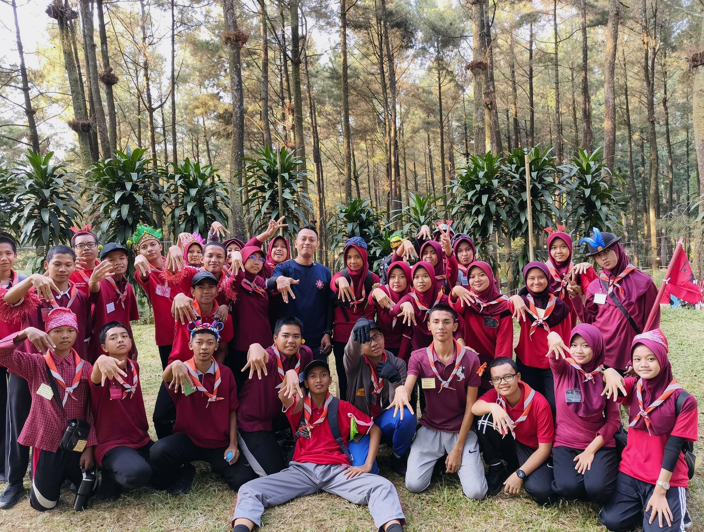
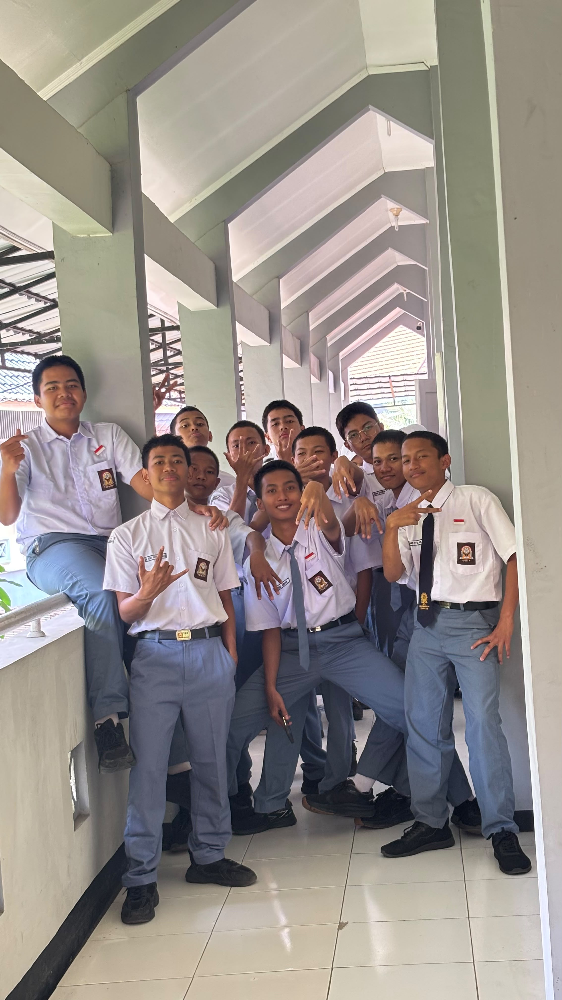
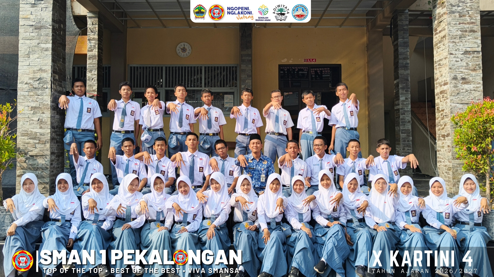
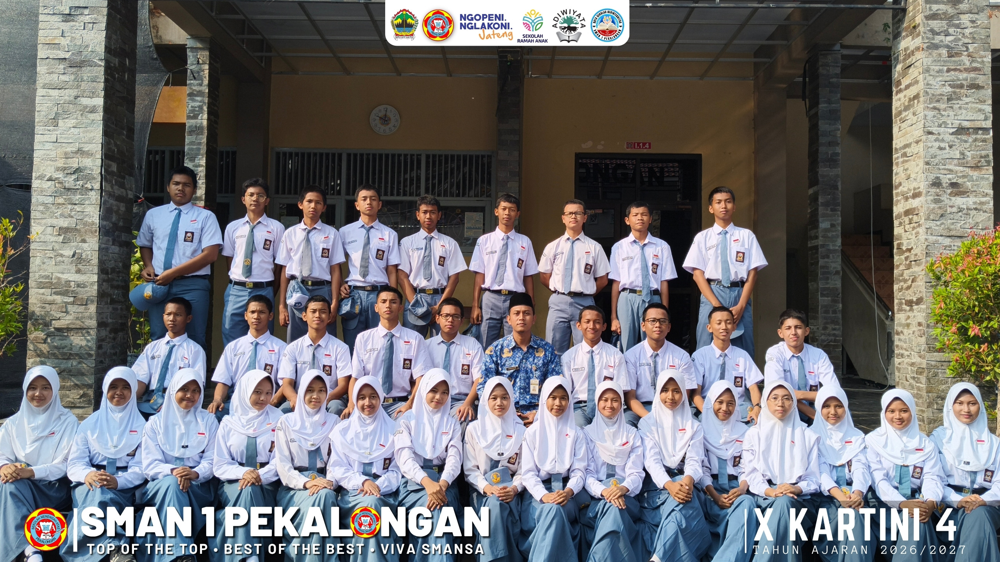
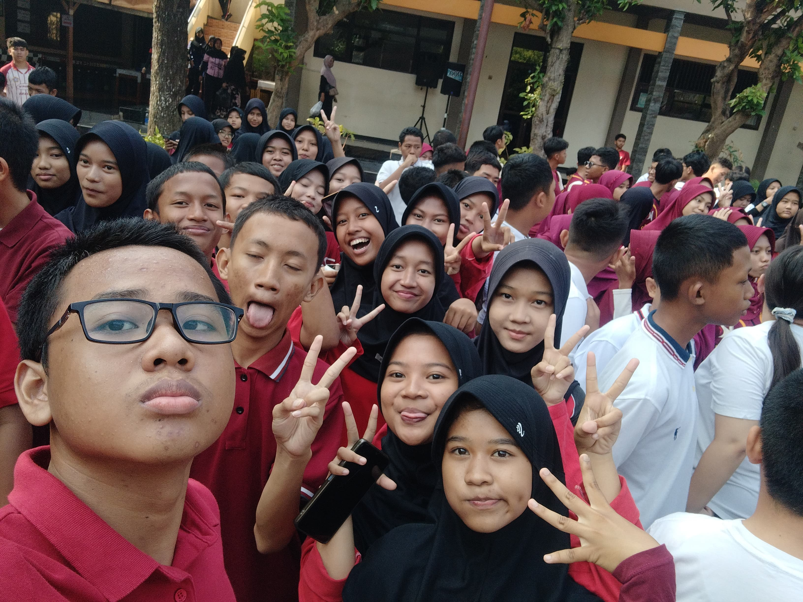

Selamat datang di web kelas X. Kartini 4.
Satu ruang digital untuk seluruh kelas — mengenal struktur kepengurusan, menyimpan kenangan dalam video dan foto, serta bernostalgia bersama. Tenang seperti laut dalam, luas seperti langit malam.
Jangan pernah merasa tertinggal hanya karena perjalananmu berbeda. Setiap orang punya waktunya masing-masing untuk bersinar. Fokuslah memperbaiki diri, menikmati proses, dan terus melangkah meskipun pelan.
Jadwal Piket Kelas
Daftar petugas kebersihan harian kelas X. Kartini 4 SMA Negeri 1 Pekalongan.
Senin
- A'an
- Agha
- Aisya
- Diva
- Okta
- Kemal
- Nafi
- Difa
Selasa
- Farhan
- Abid
- Cairo
- Adel
- Queena
- Kirana
- Nevan
Rabu
- Uni
- Inez
- Faris
- Nita
- Sultan
- Anam
- Putri
Kamis
- Azam
- Nisa
- Said
- Arsha
- Alfino
- Rangga
- Zaskia
Jum'at
- Hilmy
- Bilqis
- Frananda
- Yasma
- Khansa
- Naufal
- Naura
Video Kenangan
Momen-momen berharga dan kebersamaan kelas X. Kartini 4 SMA Negeri 1 Pekalongan.
Foto Kenangan
Kumpulan foto yang membekukan momen indah perjalanan kelas X. Kartini 4.

#01
#02
#03
#04
#05Album Kenangan
Koleksi lengkap video dan foto kenangan kelas X. Kartini 4 SMAN 1 Pekalongan.
Struktur Organisasi Kelas
Tahun Ajaran 2026/2027 - X. Kartini 4
Pak Najib Ain.
Kirana Haifa Saraswati
Nevan Albryan Prasetyo
- 1. Ahmad Cairo Putraryfa
- 2. Uni Sa'adah
- 1. Queena Adzra Calya Aqilah
- 2. Farhan Dito Arrohman
- • Adelia Sasikirana Abdullah
- • Marieta Arsha Sabriena
- • M. Roshiful Azzam Ramadhan
- • M. Zaid An Nafi
- • Agrafa Iniezkanaya
- • Diva Yudiaryati
- • Kemal Umar Assibli
- • Sultan Muhammad Al-Fatih
- • Abid Arkan
- • Muhammad Rangga Addy Putra
- • Zahra Khairunnisa
- • Naufal Faris Adrianto
- • Muhammad Alfinno Dafa Pratama
- • Frananda Aditya Kurniawan